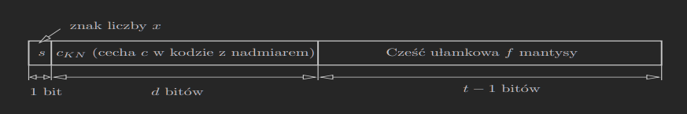

1. Reprezentacja liczby rzeczywistej w IEEE-754
Liczbę rzeczywistą x=0, zgodnie ze standardem IEEE-754 zapiszemy: x=±m⋅2c=±(1.f)2⋅2c=±(1.a1,a2,…)⋅2c gdzie
- m∈[1;2), f jest częścią ułamkową mantysy, (f)2<1
- c∈Z
- ∀iai∈{0,1}
Niech
- t−1 będzie liczbą bitów przeznaczoną na zapisanie f
- d będzie liczbą bitów przeznaczoną na zapisanie cechy c
- c∈[−2d−1+1;2d−1]
1.1. Cecha
Stosowany jest kod z nadmiarem w zapisie c: cKN=c+bias=c+2d−1−1 stąd 0≤cKN≤2d−1c=cKN−bias

1.2. Wartości brzegowe
1≤cKN≤2d−2, ponieważ c=cKN−bias=cKN−(2d−1−1)
Ostatecznie rzeczywisty zakres cechy jest następujący: cmin=−2d−1+2≤c≤2d−1−1=cmax
MINsub=2−(t−1)⋅2cmin<MINnor=2cmin≤∣rd(x)∣≤(2−2−(t−1))⋅2cmax=MAX
Niech x−=mt−1−2c oraz x+=mt−1+2c będą sąsiadującymi liczbami maszynowymi. Wówczas: x+=(mt−1−+2−(t−1))2c,x−=mt−1−2c ∣x+−x−∣=2−(t−1)2c=2c−(t−1)
∣δ∣=∣x∣∣rd(x)−x∣≤21∣x∣∣x+−x−∣=21∣mx2c∣2c−(t−1)≤2112−(t−1)=2−t=ϵ
single |
8 |
24 |
1.4⋅10−45 |
1.2⋅10−38 |
3.4⋅1038 |
5.96⋅10−8 |
double |
11 |
53 |
4.9⋅10−324 |
2.2⋅10−308 |
1.8⋅10308 |
1.11⋅10−16 |
1.3. Przykład
Wyznacz reprezentację x=32 w formacie single (t−1=23, d=8).
32=(0.10101010…)2≈(1.0101010…11)2⋅2−1
c=−1, cKN=c+bias=c+127;cKN=126=(01111110)2
32≈[0 ∣ 01111110 ∣ 01010101010101010101011]
Julia lang: bitstring(Float32(2/3))
2. Symbole specjalne
(w nawiasach podane są wielkości w formacie single)
2.1. Zera
cKN=0,f=0
- +0([0 ∣ 00000000 ∣ 00000000000000000000000])
- −0([1 ∣ 00000000 ∣ 00000000000000000000000])
- −0 lub +0 jest w szczególności skutkiem niedomiaru (∣x∣<2−23⋅2−126−MINsub)
2.2. Nieskończoności
- +∞([0 ∣ 11111111 ∣ 00000000000000000000000])
- −∞([1 ∣ 11111111 ∣ 00000000000000000000000])
- +∞ jeśli wystąpił nadmiar, x+∞=+∞, x⋅∞=+∞, x∞=+∞ dla x>0
2.3. NaN
(cKN=255, f=0)
([0 ∣ 11111111∣10000000000000000000000])
NaN pojawia się w sytuacjach:
- 00
- ∞−∞
NaN +x
2.4. Liczby denormalizowane
x∈(−MINnor; −MINsub]∪[MINsub; MINnor)
(cKN=0, f=0)
- x=2−23⋅2−126([0 ∣ 00000000 ∣ 00000000000000000000001])
- x=−2−23⋅2−126([1 ∣ 00000000 ∣ 00000000000000000000001])
3. Zaokrąglenie (Przykład)
Rozważamy arytmetykę single.
x=(1+2−24)⋅20
Sąsiednie liczby maszynowe
- x−=1
- x+=(1+2−23)⋅20
- x∈(x−; x+)
- ∣x+−x−∣=2−23
- ∣x+−x∣=2−24
- ∣x−x−∣=2−24
x−xx+=1⋅20([0 ∣ 01111111 ∣ 00000000000000000000000])=(1+2−24)⋅20([0 ∣ 01111111 ∣ 00000000000000000000000 ∣ 100…])=(1+2−23)⋅20([0 ∣ 01111111 ∣ 00000000000000000000001])
rd(x)=x−=1